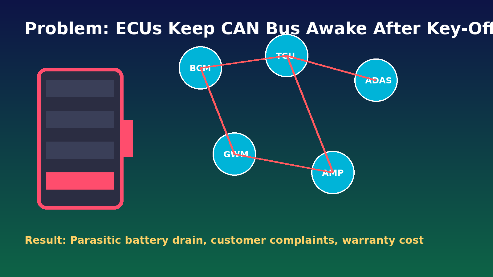

1) What is the problem?
- After key-off, some ECUs continue sending NM messages and keep the CAN bus awake.
- This causes parasitic battery drain, dead-battery complaints, and warranty costs.
- Root-cause analysis is often manual, slow, and difficult across large logs.

[Image unavailable: problem visual]')" />